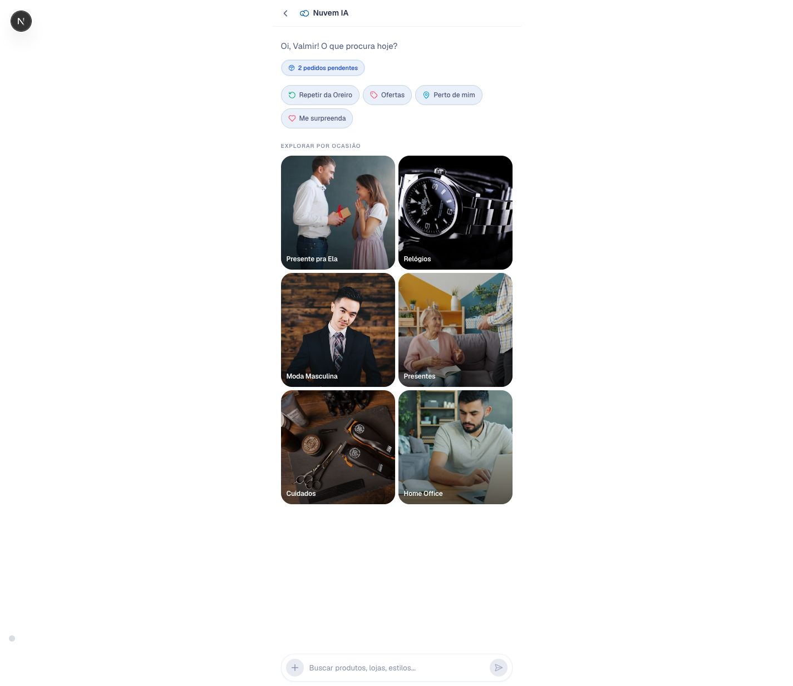
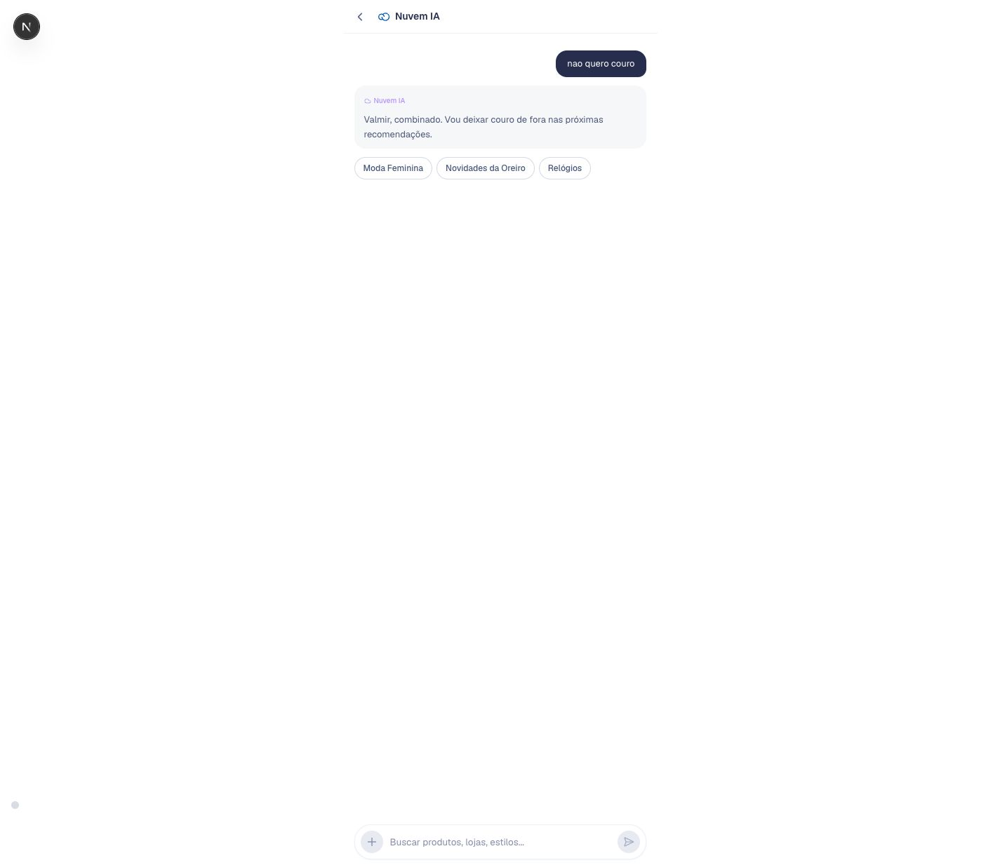
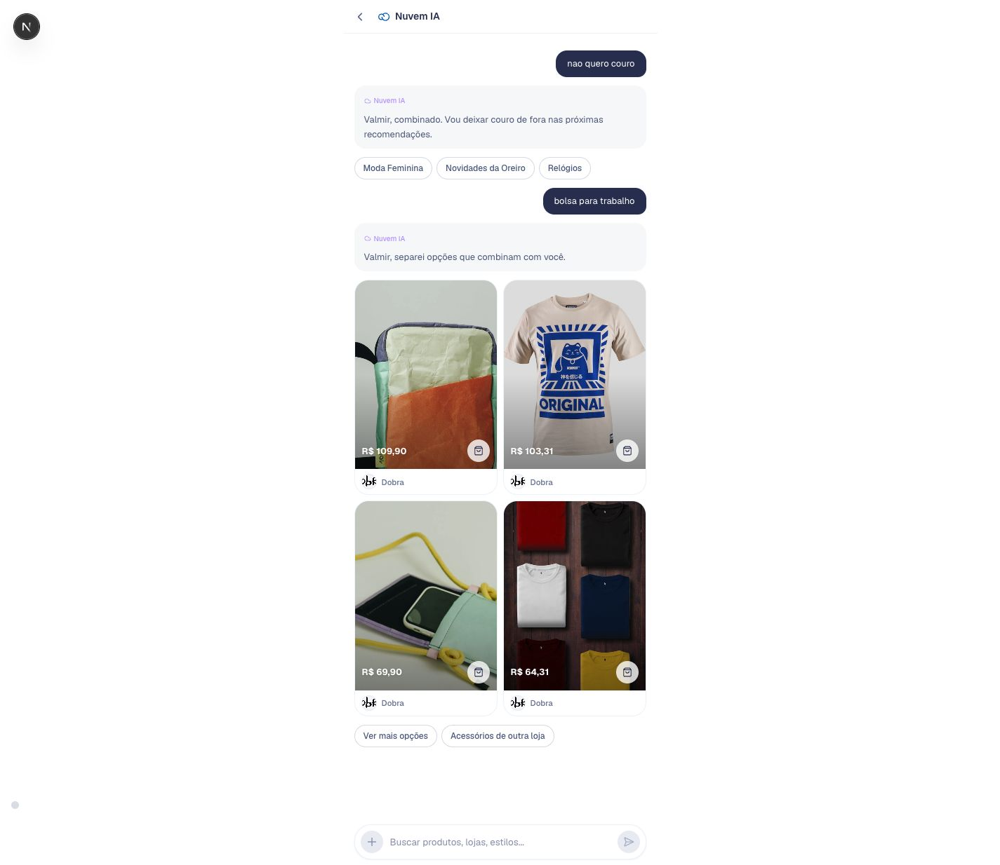

User promise
The assistant should feel like it remembers the shopper, without exposing raw memory facts or internal scores.
A visual guide to how Nuvem IA routes messages, searches products, applies shopper memory, and stays grounded in direct store relationships.
The Personal Shopper is not a marketplace assistant. It is a consumer relationship surface inside Nuvem: it helps a shopper continue buying from known stores, discover relevant products, track orders, and move toward checkout.
The assistant should feel like it remembers the shopper, without exposing raw memory facts or internal scores.
Every message goes through safety, routing, capability execution, and response rendering. Shopping adds search plus ranking.
Nuvem remains the platform layer. Store identity stays visible. The app should not behave like a generic price grid.
This is the shopper-facing version of the architecture: the user talks naturally, the app learns only explicit preference, and the next product search changes quietly.
16-second HyperFrames walkthrough built from real local prototype captures. Scenario: the shopper says they do not want leather, then asks for a work bag.



The shopper should feel continuity from the conversation, not from an explicit memory management UI.
The current ask stays in control. Memory only helps narrow choices and avoid known mismatches.
Store and category coherence still beat broad affinity, so the assistant does not drift into generic shopping.
Think of the assistant as three connected layers: the user experience, the AI orchestration layer, and the app-owned knowledge layer. Memory improves decisions, but it does not become a visible product object.
Read left to right: the visible app is simple; the intelligence sits behind `/api/recommend`; memory and catalog are inputs, not UI labels.
The API is stateless from the server perspective. The client carries enough context for follow-up queries, while the server owns safety, routing, search, ranking, and response contracts.
The key PM point: routing and ranking are hidden, but their output must feel coherent in copy, product cards, and next-step chips.
This is why "I do not want leather" wins over a past purchase of leather accessories.
Current prototype
Production path
There are two memory concepts. Static Shopper Memory is the baseline persona. Active Memory Overlay is a prototype learning layer that updates during the session and can persist explicit durable preferences locally.
Static Shopper Memory
Active Memory Overlay
| User says | Memory decision | Product behavior |
|---|---|---|
| "I do not want leather" | Session constraint. Do not make it permanent unless repeated or explicit. | Avoid leather-like products when possible. Current message wins immediately. |
| "Today I want something cheap" | Session intent. Keep it temporary. | Bias toward lower price and discounts only during this session. |
| "From now on I prefer minimalist pieces" | Durable prototype note because the user explicitly made it lasting. | Persist after reload for the same persona and bias future ranking. |
| "Show me Oreiro dresses" | No new memory required. This is a current request. | Store and category coherence wins over generic memory affinity. |
The user only sees one assistant. Internally, the router classifies each message into a specialized capability so the response can use the right data and UI surface.
| Capability | What it owns | User-facing result | PM watchout |
|---|---|---|---|
| Shopping | Product discovery, gifts, offers, reorder follow-ups, ranking. | Product cards, prices, stores, quick actions. | Keep store/category coherence ahead of memory affinity. |
| Support | Platform and store-policy questions. | Short conversational answer, optionally store-aware. | Do not invent binding store policies beyond demo snippets. |
| Tracking | Pending delivery status from shopper memory. | Delivery cards with ETA and status. | Tracking trust is a foundation, not a generic shopping pitch. |
| Blocked | Prompt injection, harmful content, abuse, PII extraction attempts. | Safe refusal and helpful suggestions. | Bias toward allowing normal shopping frustration and informal language. |
The Consumer App reuses the same AI product architecture patterns, but applies them to a different user, channel, and memory depth.
The prototype is valuable because most product contracts can stay the same while the backing services become real.
| Layer | Current prototype | Production path |
|---|---|---|
| Router | GPT-4.1 classification per message. | Add conversation context window, evals, and observability. |
| SmartSearch | Iterative search over static catalog. | Swap catalog source to live MCP Catalog or product API. |
| Memory | Static persona JSON plus browser MemoryOverlay. | Databricks API plus app-owned persistence and privacy controls. |
| Checkout | Simulated prefill and continuation. | Integrate with Nuvem checkout while preserving store identity. |
| Support | Demo snippets for store policies. | Knowledge Base RAG with documented ownership and freshness. |
Good signs
Risk signs
app/api/recommend/route.tsRouting, safety, capability execution, ranking, and memory-aware recommendation contract.lib/ai-memory-overlay.tsTyped overlay, privacy-safe rendering, browser storage, and ranking signals.app/api/memory/update/route.tsMemory extraction, durable vs session classification, and deterministic fallback.app/assistente/page.tsxClient-side continuity, storage lifecycle, and invisible AI memory activation.